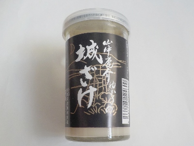
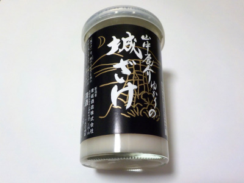

青砥酒造の城ざけ
2024/08/15

もろみが多く、とろっとして甘いにごり酒です。
にごりが濃いので個性的でいいですね。お米感が強くて好きだなと思いました。
特徴があるお酒はいいですね。
島根県安来市広瀬町布部1164-4
2024/08/15

もろみが多く、とろっとして甘いにごり酒です。
にごりが濃いので個性的でいいですね。お米感が強くて好きだなと思いました。
特徴があるお酒はいいですね。
2022/11/13

にごり酒でアルコールが19度あります。濃いお酒です。
にごりでマイルドなんですけど、アルコールがツンときました。ちょっとキツイなーって思ったんですけど、飲んでるうちに酔っぱらって気にならなくなりました。
よくある感じのにごり酒よりも白い部分が多い感じがしました。